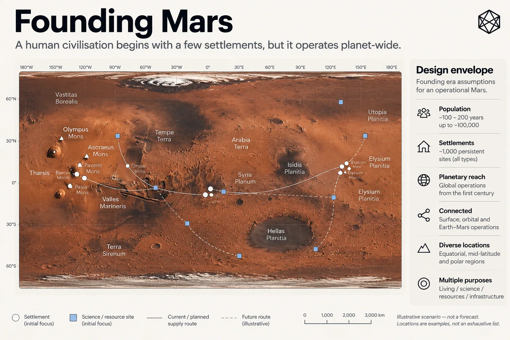

The First Two Centuries
The Founding Geography of Human Mars
A geography for six astronauts is easy.
Everyone knows where the habitat is. Everyone knows which landing pad is meant by “the pad”, because there is probably only one of those too. The rover garage, power plant and science sites are all held inside the same mission maps, databases and institutional context. Precise coordinates can handle anything beyond the vocabulary everybody already shares.
A geography for fifty million Martians is a completely different problem. By then Mars may have mature cities, governments, transport systems, property law, regional identities and generations of accumulated local names. More importantly, the people living there will be in a much better position than anyone today to decide how those things should work.
The useful design space lies between those worlds.
It begins when expeditions have become permanent settlements and continues while a recognisably Martian society is forming, but before centuries of law, politics, language and habit have turned much of its geography into inherited fact.
For this book, that is the founding geography of human Mars.
The design envelope

Read a description of this illustration
The image imagines an early, sparsely populated Mars with separate settlements, stations, vehicles and infrastructure. It illustrates a design scenario, not a forecast or a map of actual sites.
The working period is roughly the first 100 to 200 years of sustained human settlement.
That is intentionally broad. Settlement could accelerate spectacularly, proceed much more slowly than enthusiasts expect, stall for decades or develop in bursts around particular technologies and economic opportunities. There is no useful year in which Mars suddenly stops being an expedition and receives a certificate confirming that civilisation has begun.
What we need instead is a design environment.
For that purpose, I will sometimes work with an upper scenario of perhaps 100,000 permanent inhabitants spread across as many as 1,000 persistent settlements, stations, industrial sites, depots, scientific facilities and other operational locations.
A hundred thousand people sounds substantial until you distribute them across a planet. It is roughly the population of a decent-sized terrestrial town spread over an area comparable to Earth’s dry land. Mars would still be astonishingly empty.
And a site need not be a settlement. Many of those thousand persistent locations could contain few people or none at all: communications relays, mines, water plants, fuel depots, scientific stations, power installations, emergency shelters or transport hubs.
The numbers therefore describe a particular sort of human Mars: sparse, distributed and increasingly connected. There is enough activity for shared infrastructure to matter, but nowhere near enough settlement to fill the planet with inherited geography.
These are design assumptions, not forecasts.
Their purpose is to make the future embedded in the design visible. If Mars reaches this scale in seventy years, nothing has been proved. If it takes three centuries, nothing has been disproved. We are simply giving the architecture something demanding enough to design against.
Mostly empty, increasingly useful
The sparsity matters.
A rover route between settlements crosses terrain nobody lives on. Scientific teams work in places that may never support a town. Resource surveys examine ground decades before anybody decides whether development makes sense. Communications relays, fuel depots and emergency shelters can matter precisely because there is nothing else nearby.
Some territory will become important because people intend to build there. Other territory may become important because they should not. A scientifically sensitive site can require protection; a hazardous slope can become an exclusion area; a landing corridor matters because spacecraft pass through it, not because somebody has constructed houses underneath.
Founding Mars may therefore need geography well beyond settlement geography.
That is quite different from the world in which many terrestrial systems evolved. On Earth, roads, farms, towns, ownership and political jurisdictions already occupy much of the territory people routinely use. Geography often grew outward from populated places and thickened as those places became more interconnected.
Mars could spend generations with vast distances between small islands of sustained activity.
The ground does not have to become inhabited before it becomes operationally relevant.
Neither does operational relevance make it culturally meaningful. A relay station can need a precise, persistent reference without anybody feeling compelled to name the surrounding plain. A scientific traverse can cross territory that no resident will regard as a neighbourhood for centuries, if ever.
That distinction gives founding Mars an unusual advantage: technical geography can arrive before anyone needs to pretend that technical identifiers are culture.
People and machines on the same surface
Mars will also be unusually machine-heavy.
That does not require a heroic prediction about artificial intelligence. The economics of the environment are enough. Surface transport, cargo handling, construction, surveying, power generation, environmental monitoring and remote scientific work all become obvious candidates for automation when sending a person outside is difficult, expensive or unnecessary.
Some machines will remain tightly controlled by humans. Others may work with substantial autonomy. Either way, their geography has to connect with ours.
Humans are good at contextual descriptions. “The equipment yard behind the west ridge” may be perfectly usable when everyone involved knows the ridge and has spent three months complaining about the equipment yard.
Software is less forgiving.
It needs a destination that resolves consistently without shared memory, informal names or a former colleague explaining what somebody meant in 2048. Yet the opposite extreme is equally unattractive: a machine identifier can be perfect inside a database and painful to speak over a radio, remember or write on a maintenance sheet.
Founding Mars therefore has to accommodate both behaviours.
People should not be required to think like computers.
Computers should not be required to guess what people meant.
Many organisations, one Mars
Exploration programmes can initially avoid much geographic complexity because a single organisation often controls most of the operation. It chooses the maps, defines local naming conventions, runs the software and tells everybody which system to use.
Permanent settlement weakens that simplicity.
A Mars containing hundreds of persistent sites could involve national space agencies, commercial operators, universities, scientific institutes, settlement authorities, transport companies, utilities, mining ventures, independent communities and institutions nobody has invented yet. Some will cooperate closely. Others will compete. A few may spend years arguing while still needing one another’s freight services.
No constitutional prediction is required to see the operational consequence.
Mars will probably not remain one mission-control room.
Different organisations will need to exchange locations without first standardising every internal process or accepting the same institutional authority. A cargo company and a settlement administration can use different software while still needing to agree where the container is going. A scientific body and an industrial operator can disagree about what should happen in a region while still needing to know which region they are discussing.
Earth also remains part of the operating environment. During much of the founding period, science, manufacturing, finance, engineering support, communications and family life are likely to retain deep links off-planet. Teams on Earth may work on assets they have never visited. Scientists will connect surface observations to long-established datasets. Lawyers, insurers and investors may encounter Martian geography almost entirely through screens and documents.
There is no reason for Mars to copy Earth’s political geography.
There is equally little advantage in designing basic Martian geography so that nobody on Earth can understand it.
Law before political maturity
Political geography may remain unsettled for a long long time.
Legal geography probably cannot.
Permanent activity quickly creates spatial agreements. One organisation may receive permission to operate equipment across an area. A buried power line may need a corridor. A landing site requires a safety perimeter. Scientific terrain may be protected from disturbance. Access rights, operating restrictions and temporary exclusion zones can all exist before anybody has decided what the Martian equivalent of a county should be.
Those boundaries may overlap.
They may also originate from different institutions, last for different periods and change independently.
That is normal. A cable corridor is not trying to be a government. A safety zone has no opinion about property rights. A research restriction exists because of science, not because the boundary has discovered a political destiny.
What matters for the founding scenario is simply that these arrangements will need to refer to space.
Institutional change makes the same point from another direction. Companies merge, administrations reorganise, settlements expand and regulatory systems evolve. A spatial reference tied too tightly to one particular institution can become harder to interpret when that institution changes.
The founding environment is therefore one in which the human structures applied to territory are likely to be more changeable than the physical territory itself.
That observation will become important when we turn the scenario into requirements. For now, it is enough to recognise the environment we are designing inside.
Assume the network can fail
Modern Earth encourages another habit that deserves scrutiny on Mars: the expectation that every useful service can contact somebody else’s computer whenever it needs to.
Founding Mars is a poor place to make that assumption absolute.
Mature settlements may have excellent local communications. Regional networks could be highly resilient, and sophisticated software will almost certainly handle most spatial tasks. But vehicles and crews will travel far outside dense infrastructure. Remote sites can lose communications. Equipment fails. Earth remains separated by unavoidable light-time even when everything works perfectly.
The design scenario should therefore include periods when a user has the relevant data and software but not a reliable live connection to a central service.
That is all the assumption needs to say.
It does not require low technology or an obsession with paper maps. It simply means an infrastructure design should think carefully before making the identity of a location depend entirely on access to one remote system.
Several languages, no pre-written culture
The final assumptions are human rather than technical.
English may be heavily represented in early Mars operations. Given the language of much current international science, engineering and commercial spaceflight, that is hardly an adventurous prediction.
Assuming that the same language will dominate a civilisation centuries later would be more adventurous.
People may arrive from many countries. Settlements could develop different linguistic cultures. Pronunciations will drift, vocabulary will emerge locally and future Martians will undoubtedly invent expressions that would make an Earth-based standards committee mildly uncomfortable.
The founding scenario therefore needs to allow for a multilingual future without pretending we can design the languages that future will use.
The same restraint applies more broadly.
We do not know what Martians will eventually call themselves, which settlement names will survive, what regional identities will emerge, which historic events will matter or where political borders will settle. Those are not omissions waiting for a twenty-first-century designer to correct.
They are future history.
A useful architecture may be designed before all of that exists. It should not require us to invent it.
The principle is less about geography than restraint:
Build what benefits from being common. Leave open what benefits from being lived.
That is the founding Mars used in this book: well measured but thinly settled; operationally distributed; shared by humans and machines; institutionally plural; still connected to Earth; already generating legal geography; unable to assume permanent connectivity; increasingly multilingual; and culturally too young for us to decide what most of its places should eventually mean.
It is neither an expedition nor a mature planetary civilisation.
It is the awkward, interesting period in between.
We now know which Mars we are designing for.